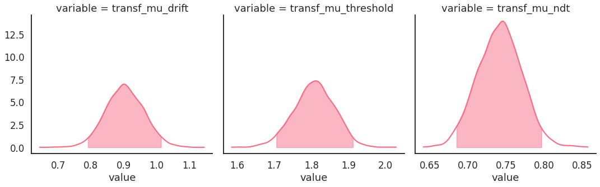
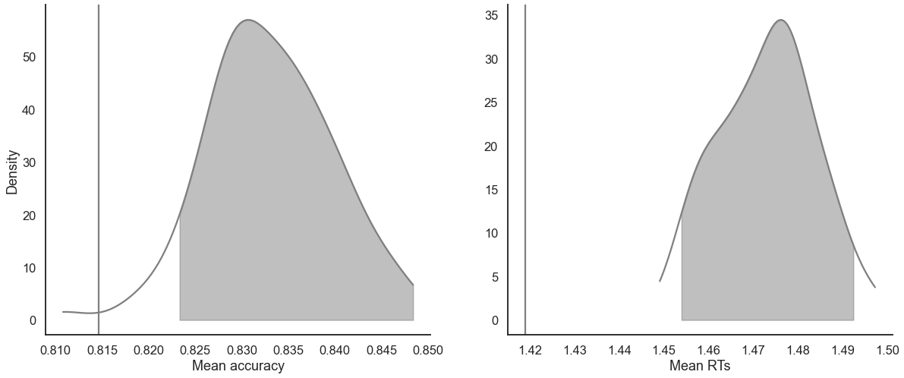
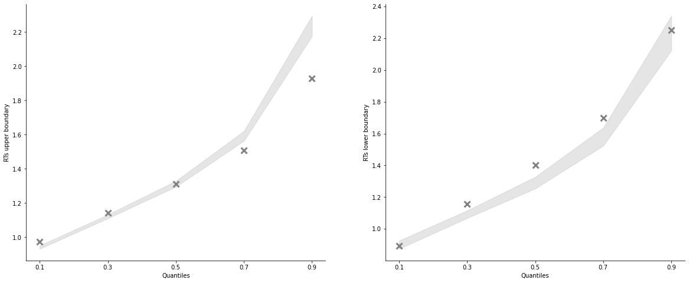
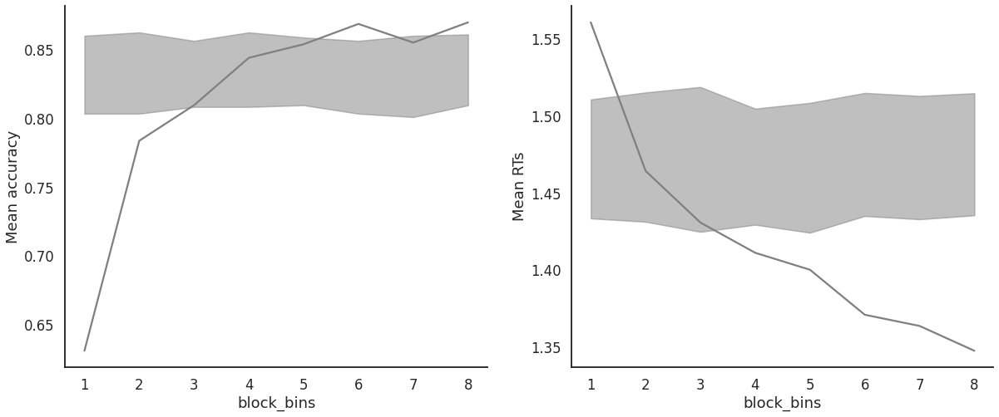

Fit the DDM on hierarchical data
Import the data
[1]:
from rlssm.utility.load_data import load_example_dataset
data = load_example_dataset(hierarchical_levels = 2)
data.head()
[1]:
| participant | block_label | trial_block | f_cor | f_inc | cor_option | inc_option | times_seen | rt | accuracy | feedback_type | |
|---|---|---|---|---|---|---|---|---|---|---|---|
| 0 | 1 | 1 | 1 | 43 | 39 | 2 | 1 | 1 | 1.244082 | 0 | 0 |
| 1 | 1 | 1 | 2 | 60 | 50 | 4 | 3 | 1 | 1.101821 | 1 | 0 |
| 2 | 1 | 1 | 3 | 44 | 36 | 4 | 2 | 2 | 1.029923 | 0 | 0 |
| 3 | 1 | 1 | 4 | 55 | 55 | 4 | 3 | 2 | 1.368007 | 0 | 0 |
| 4 | 1 | 1 | 5 | 52 | 49 | 4 | 3 | 3 | 1.039329 | 1 | 0 |
Initialize the model
[2]:
from rlssm.model.models_DDM import DDModel
model = DDModel(hierarchical_levels = 2)
Fit
[3]:
# sampling parameters
n_warmup = 1000
n_sampling = 3000
n_chains = 2
n_thin = 1
# bayesian model, change default priors:
drift_priors = {'mu_mu':1, 'sd_mu':1, 'mu_sd':0, 'sd_sd':1}
threshold_priors = {'mu_mu':-1, 'sd_mu':.5, 'mu_sd':0, 'sd_sd':1}
[4]:
model_fit = model.fit(
data,
drift_priors=drift_priors,
threshold_priors=threshold_priors,
iter_warmup=n_warmup,
iter_sampling=n_sampling,
chains = n_chains)
get Rhat
[5]:
model_fit.rhat.describe()
[5]:
| rhat | |
|---|---|
| count | 32492.000000 |
| mean | 0.999920 |
| std | 0.000243 |
| min | 0.999674 |
| 25% | 0.999786 |
| 50% | 0.999872 |
| 75% | 0.999993 |
| max | 1.009405 |
calculate wAIC
[6]:
model_fit.waic
[6]:
{'lppd': -5411.182250067814,
'p_waic': 100.63196354609696,
'waic': 11023.62842722782,
'waic_se': 176.66466050064793}
Posteriors
[7]:
model_fit.samples.describe()
[7]:
| transf_mu_drift | ndt_sbj[1] | ndt_sbj[2] | ndt_sbj[3] | ndt_sbj[4] | ndt_sbj[5] | ndt_sbj[6] | ndt_sbj[7] | ndt_sbj[8] | ndt_sbj[9] | ... | threshold_sbj[18] | threshold_sbj[19] | threshold_sbj[20] | threshold_sbj[21] | threshold_sbj[22] | threshold_sbj[23] | threshold_sbj[24] | threshold_sbj[25] | threshold_sbj[26] | threshold_sbj[27] | |
|---|---|---|---|---|---|---|---|---|---|---|---|---|---|---|---|---|---|---|---|---|---|
| count | 6000.000000 | 6000.000000 | 6000.000000 | 6000.000000 | 6000.000000 | 6000.000000 | 6000.000000 | 6000.000000 | 6000.000000 | 6000.000000 | ... | 6000.000000 | 6000.000000 | 6000.000000 | 6000.000000 | 6000.000000 | 6000.000000 | 6000.000000 | 6000.000000 | 6000.000000 | 6000.000000 |
| mean | 0.903614 | 0.834055 | 0.655434 | 0.880659 | 0.697780 | 0.730181 | 0.760707 | 0.785532 | 0.755432 | 0.741328 | ... | 1.695188 | 2.416692 | 2.032607 | 2.113249 | 2.064710 | 2.237746 | 1.692517 | 1.502668 | 1.522944 | 1.931133 |
| std | 0.058525 | 0.007951 | 0.008027 | 0.008411 | 0.011892 | 0.009436 | 0.007629 | 0.009225 | 0.017968 | 0.010099 | ... | 0.050563 | 0.076427 | 0.070540 | 0.090275 | 0.082555 | 0.089762 | 0.065065 | 0.050911 | 0.046268 | 0.063163 |
| min | 0.644314 | 0.795589 | 0.617667 | 0.828714 | 0.640971 | 0.686307 | 0.720884 | 0.741855 | 0.651512 | 0.694312 | ... | 1.521590 | 2.169600 | 1.807300 | 1.769340 | 1.792770 | 1.980560 | 1.447830 | 1.335650 | 1.366500 | 1.708390 |
| 25% | 0.864027 | 0.829132 | 0.650440 | 0.875655 | 0.690575 | 0.724564 | 0.756241 | 0.779731 | 0.743935 | 0.735218 | ... | 1.659840 | 2.363885 | 1.984888 | 2.051448 | 2.007697 | 2.176400 | 1.647547 | 1.468225 | 1.490710 | 1.886485 |
| 50% | 0.903014 | 0.834704 | 0.656146 | 0.881377 | 0.698775 | 0.730982 | 0.761514 | 0.786379 | 0.756350 | 0.742443 | ... | 1.693585 | 2.414625 | 2.030870 | 2.110305 | 2.063575 | 2.233610 | 1.691290 | 1.500780 | 1.521500 | 1.930255 |
| 75% | 0.943146 | 0.839636 | 0.661148 | 0.886497 | 0.706304 | 0.736876 | 0.766097 | 0.792279 | 0.768193 | 0.748528 | ... | 1.728695 | 2.466720 | 2.078965 | 2.169643 | 2.117173 | 2.296740 | 1.735422 | 1.536288 | 1.553675 | 1.973118 |
| max | 1.145460 | 0.857250 | 0.678214 | 0.903871 | 0.729880 | 0.754671 | 0.780673 | 0.810502 | 0.806700 | 0.768572 | ... | 1.889270 | 2.710040 | 2.376000 | 2.449030 | 2.489520 | 2.591150 | 1.939490 | 1.722350 | 1.714380 | 2.192300 |
8 rows × 84 columns
[8]:
import seaborn as sns
sns.set(context = "talk",
style = "white",
palette = "husl",
rc={'figure.figsize':(15, 8)})
[9]:
model_fit.plot_posteriors(height=5, show_intervals='HDI');

Posterior predictives
Ungrouped
[10]:
pp_summary = model_fit.get_posterior_predictives_summary(n_posterior_predictives=100)
pp_summary
[10]:
| mean_accuracy | mean_rt | skewness | quant_10_rt_low | quant_30_rt_low | quant_50_rt_low | quant_70_rt_low | quant_90_rt_low | quant_10_rt_up | quant_30_rt_up | quant_50_rt_up | quant_70_rt_up | quant_90_rt_up | |
|---|---|---|---|---|---|---|---|---|---|---|---|---|---|
| sample | |||||||||||||
| 1 | 0.836324 | 1.472888 | 2.012491 | 0.902504 | 1.084305 | 1.295443 | 1.558672 | 2.167663 | 0.944664 | 1.124416 | 1.308902 | 1.603254 | 2.236079 |
| 2 | 0.820080 | 1.482044 | 2.189477 | 0.854851 | 1.073392 | 1.270940 | 1.541261 | 2.305245 | 0.953740 | 1.131644 | 1.324341 | 1.616389 | 2.231728 |
| 3 | 0.818843 | 1.461451 | 1.971206 | 0.910193 | 1.089654 | 1.291573 | 1.557270 | 2.155531 | 0.939234 | 1.114607 | 1.309213 | 1.588999 | 2.215503 |
| 4 | 0.829672 | 1.462925 | 2.052001 | 0.914454 | 1.114654 | 1.294640 | 1.578460 | 2.170640 | 0.935519 | 1.120756 | 1.310031 | 1.591187 | 2.191603 |
| 5 | 0.832921 | 1.470473 | 1.923023 | 0.895867 | 1.087681 | 1.263260 | 1.542949 | 2.127622 | 0.944032 | 1.131648 | 1.315618 | 1.598374 | 2.225522 |
| ... | ... | ... | ... | ... | ... | ... | ... | ... | ... | ... | ... | ... | ... |
| 96 | 0.836015 | 1.505057 | 2.018858 | 0.913929 | 1.120677 | 1.311724 | 1.623893 | 2.241807 | 0.940909 | 1.123996 | 1.323298 | 1.623920 | 2.318843 |
| 97 | 0.831374 | 1.452843 | 2.130462 | 0.904778 | 1.092866 | 1.274184 | 1.549612 | 2.214417 | 0.940157 | 1.118636 | 1.300172 | 1.573216 | 2.153075 |
| 98 | 0.834623 | 1.462540 | 1.977755 | 0.905216 | 1.084695 | 1.263393 | 1.558063 | 2.191796 | 0.939393 | 1.114899 | 1.302935 | 1.597298 | 2.217329 |
| 99 | 0.825959 | 1.464190 | 2.090159 | 0.905435 | 1.096682 | 1.280867 | 1.567708 | 2.153517 | 0.937930 | 1.110607 | 1.301933 | 1.582471 | 2.226359 |
| 100 | 0.834158 | 1.470582 | 2.263835 | 0.909925 | 1.079988 | 1.249876 | 1.535572 | 2.235854 | 0.944753 | 1.116688 | 1.303927 | 1.603424 | 2.219879 |
100 rows × 13 columns
[11]:
model_fit.plot_mean_posterior_predictives(n_posterior_predictives=100, figsize=(20,8), show_intervals='HDI');

[12]:
model_fit.plot_quantiles_posterior_predictives(n_posterior_predictives=100, kind='shades');

Grouped
[13]:
import numpy as np
import pandas as pd
[14]:
# Define new grouping variables, in this case, for the different choice pairs, but any grouping var can do
data['choice_pair'] = 'AB'
data.loc[(data.cor_option == 3) & (data.inc_option == 1), 'choice_pair'] = 'AC'
data.loc[(data.cor_option == 4) & (data.inc_option == 2), 'choice_pair'] = 'BD'
data.loc[(data.cor_option == 4) & (data.inc_option == 3), 'choice_pair'] = 'CD'
data['block_bins'] = pd.cut(data.trial_block, 8, labels=np.arange(1, 9))
[15]:
model_fit.get_grouped_posterior_predictives_summary(
grouping_vars=['block_label', 'choice_pair'],
quantiles=[.3, .5, .7],
n_posterior_predictives=100)
[15]:
| mean_accuracy | mean_rt | skewness | quant_30_rt_low | quant_30_rt_up | quant_50_rt_low | quant_50_rt_up | quant_70_rt_low | quant_70_rt_up | |||
|---|---|---|---|---|---|---|---|---|---|---|---|
| block_label | choice_pair | sample | |||||||||
| 1 | AB | 1 | 0.822761 | 1.471626 | 2.657549 | 1.114174 | 1.121570 | 1.276826 | 1.322826 | 1.510895 | 1.617096 |
| 2 | 0.815642 | 1.442868 | 1.990927 | 1.053502 | 1.101756 | 1.221142 | 1.330382 | 1.509963 | 1.586605 | ||
| 3 | 0.843575 | 1.472547 | 1.709116 | 1.140087 | 1.123903 | 1.387745 | 1.297668 | 1.742062 | 1.571095 | ||
| 4 | 0.852886 | 1.461289 | 2.066555 | 1.122415 | 1.106834 | 1.293683 | 1.303561 | 1.501261 | 1.579353 | ||
| 5 | 0.811918 | 1.473308 | 1.735016 | 1.157361 | 1.135946 | 1.281197 | 1.282840 | 1.594695 | 1.569072 | ||
| ... | ... | ... | ... | ... | ... | ... | ... | ... | ... | ... | ... |
| 3 | CD | 96 | 0.853704 | 1.445401 | 1.916877 | 1.108463 | 1.100182 | 1.245880 | 1.297488 | 1.693152 | 1.538766 |
| 97 | 0.820370 | 1.444563 | 1.666012 | 1.131134 | 1.115417 | 1.289976 | 1.294463 | 1.480066 | 1.588730 | ||
| 98 | 0.844444 | 1.478613 | 1.833270 | 1.094620 | 1.112042 | 1.294260 | 1.321258 | 1.629506 | 1.616004 | ||
| 99 | 0.822222 | 1.439588 | 2.732448 | 1.144868 | 1.113079 | 1.347870 | 1.305703 | 1.571074 | 1.528491 | ||
| 100 | 0.842593 | 1.494708 | 1.810302 | 1.095069 | 1.091960 | 1.268813 | 1.299024 | 1.579005 | 1.642565 |
1200 rows × 9 columns
[16]:
model_fit.get_grouped_posterior_predictives_summary(
grouping_vars=['block_bins'],
quantiles=[.3, .5, .7],
n_posterior_predictives=100)
[16]:
| mean_accuracy | mean_rt | skewness | quant_30_rt_low | quant_30_rt_up | quant_50_rt_low | quant_50_rt_up | quant_70_rt_low | quant_70_rt_up | ||
|---|---|---|---|---|---|---|---|---|---|---|
| block_bins | sample | |||||||||
| 1 | 1 | 0.849383 | 1.472770 | 3.000080 | 1.196498 | 1.118431 | 1.379314 | 1.327157 | 1.617146 | 1.584692 |
| 2 | 0.824691 | 1.461632 | 1.741275 | 1.118516 | 1.113864 | 1.310326 | 1.288555 | 1.663280 | 1.582645 | |
| 3 | 0.820988 | 1.491323 | 1.791331 | 1.120800 | 1.151897 | 1.316935 | 1.347935 | 1.548980 | 1.619783 | |
| 4 | 0.830864 | 1.468017 | 1.857215 | 1.139158 | 1.108483 | 1.366285 | 1.299820 | 1.614111 | 1.614256 | |
| 5 | 0.823457 | 1.487185 | 2.194587 | 1.080491 | 1.130753 | 1.277892 | 1.323849 | 1.564566 | 1.634662 | |
| ... | ... | ... | ... | ... | ... | ... | ... | ... | ... | ... |
| 8 | 96 | 0.818640 | 1.509496 | 1.877033 | 1.064642 | 1.112386 | 1.219882 | 1.312611 | 1.571936 | 1.627640 |
| 97 | 0.826196 | 1.487436 | 1.860265 | 1.123514 | 1.145594 | 1.302736 | 1.339433 | 1.500332 | 1.615293 | |
| 98 | 0.848866 | 1.436720 | 2.208275 | 1.067737 | 1.118741 | 1.278684 | 1.311518 | 1.537018 | 1.547097 | |
| 99 | 0.843829 | 1.433309 | 1.885327 | 1.061207 | 1.122235 | 1.263771 | 1.311101 | 1.464823 | 1.546171 | |
| 100 | 0.858942 | 1.461081 | 2.259174 | 1.081922 | 1.124959 | 1.259760 | 1.302550 | 1.461689 | 1.601377 |
800 rows × 9 columns
[17]:
model_fit.plot_mean_grouped_posterior_predictives(grouping_vars=['block_bins'],
n_posterior_predictives=100,
figsize=(20,8));

[18]:
model_fit.plot_quantiles_grouped_posterior_predictives(n_posterior_predictives=100,
grouping_var='choice_pair',
kind='shades',
quantiles=[.1, .3, .5, .7, .9]);
